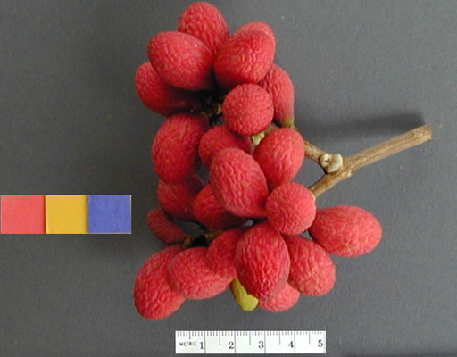

A genus is a group of closely related plants that sit inside a family. Members
of the same genus usually resemble one another in the shape of their leaves,
flowers and fruits, and they often live in similar habitats. The plural of
genus is genera. In a scientific name such as Ficus benjamina, the
first word is always the genus.
This page introduces the eight genera in our collection. Every family has
exactly two genera, and the tree diagrams below show at a glance which genus
belongs to which family. The next page then goes down one more level to the
individual species.
Genera in Sapindaceae

Figure 5: Rambutan.
Nephelium
Family: Sapindaceae
Nephelium is a genus of about 22 to 25 species centred in Peninsular Malaysia,
with others reaching Borneo, the Philippines and parts of mainland Asia.
The trees are generally fairly small and crooked, and are found as middle-storey trees
in lowland evergreen rainforest on hills and ridges.
Lepisanthes is a genus of about 24 to 25 species of trees and shrubs ,
native to tropical Africa, South and Southeast Asia, Australia and Madagascar. Its flowers are unisexual,
and its leaves are pinnately compound and spirally arranged. A few species are used as ornamentals,
some have medicinal value, and the fruits of some are eaten.
Paphiopedilum, often called the Venus slipper, ranges from India eastward across Southeast Asia
to the Philippines. Most species grow in lower montane evergreen or seasonally deciduous forest,
often on the shaded forest floor, while a few grow on trees and the rest on the ground or on rocks.
Nearly all the Bornean species are naturally rare, and some are threatened with extinction unless their
habitats are better protected.
Phalaenopsis, known as the moth orchids. The plants are monopodial epiphytes, sometimes growing on rocks,
with long coarse roots and short leafy stems hidden by overlapping leaf bases.The genus is used extensively
in hybridisation and is now one of the most common windowsill plants in the world. Most species are now very
rare in the wild because of collecting and habitat destruction.
Licuala has about 130 species, with the greatest diversity in Malaysia, Borneo and New Guinea.
These are under- to mid-storey fan palms, some with single stems, some with several, and some with
no stem at all.The leaves are fan-shaped and pleated with toothed margins, and may be whole or split
into wedge-shaped segments; the fruits are small, orange or red, and one-seeded. Most species are
sensitive to disturbance, which makes them good indicators of human impact on the forest.
Calamus is the largest genus of palms in the world, and it is also the largest of the rattan genera.
Most species are climbers with long, slender, flexible stems, though some are erect shrubs or have no visible stem.
The word rattan comes from the Malay word rotan, and the cane, which is the stem stripped of its leaf sheaths,
is used for everything from bridges and baskets to fish traps and furniture. Most of the best commercial
rattans belong to this genus. Heavy trade has led to substantial over-exploitation of wild rattan.
Artocarpus is native to South and Southeast Asia, New Guinea and the southern Pacific and comprises about 50 species.
They are small to large monoecious trees, and all parts contain white latex. The fruit is an aggregate fruit formed by
the enlargement of the entire female flower head.Most species yield fairly good timber, and about a dozen are used in
traditional medicine in Southeast Asia; the latex is mixed with wax for batik work.
They grow throughout the tropical and subtropical regions as shrubs, lianas or trees. Figs are characterised
by a unique inflorescence called a syconium, an urn-shaped structure that encloses numerous tiny flowers.
Figs are keystone species in many tropical forest ecosystems, and over 1,200 vertebrate species are reported to feed on them.